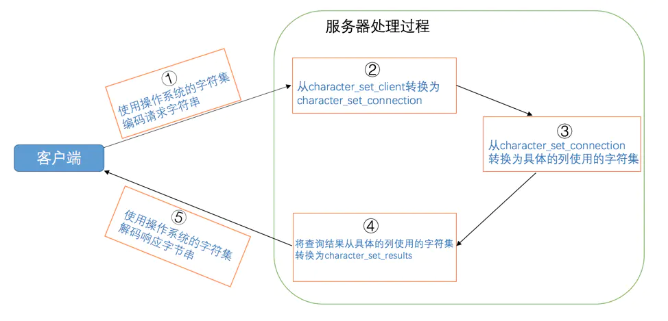

字符集和比较规则
标签： MySQL是怎样运行的
字符集和比较规则简介
字符集简介
我们知道在计算机中只能存储二进制数据，那该怎么存储字符串呢？当然是建立字符与二进制数据的映射关系了，建立这个关系最起码要搞清楚两件事儿：
-
你要把哪些字符映射成二进制数据？
也就是界定清楚字符范围。
-
怎么映射？
将一个字符映射成一个二进制数据的过程也叫做
编码，将一个二进制数据映射到一个字符的过程叫做解码。
人们抽象出一个字符集的概念来描述某个字符范围的编码规则。比方说我们来自定义一个名称为xiaohaizi的字符集，它包含的字符范围和编码规则如下：
-
包含字符
'a'、'b'、'A'、'B'。 -
编码规则如下：
采用1个字节编码一个字符的形式，字符和字节的映射关系如下：
'a' -> 00000001 (十六进制：0x01) 'b' -> 00000010 (十六进制：0x02) 'A' -> 00000011 (十六进制：0x03) 'B' -> 00000100 (十六进制：0x04)
有了xiaohaizi字符集，我们就可以用二进制形式表示一些字符串了，下边是一些字符串用xiaohaizi字符集编码后的二进制表示：
'bA' -> 0000001000000011 (十六进制：0x0203)
'baB' -> 000000100000000100000100 (十六进制：0x020104)
'cd' -> 无法表示，字符集xiaohaizi不包含字符'c'和'd'
比较规则简介
在我们确定了xiaohaizi字符集表示字符的范围以及编码规则后，怎么比较两个字符的大小呢？最容易想到的就是直接比较这两个字符对应的二进制编码的大小，比方说字符'a'的编码为0x01，字符'b'的编码为0x02，所以'a'小于'b'，这种简单的比较规则也可以被称为二进制比较规则，英文名为binary collation。
二进制比较规则是简单，但有时候并不符合现实需求，比如在很多场合对于英文字符我们都是不区分大小写的，也就是说'a'和'A'是相等的，在这种场合下就不能简单粗暴的使用二进制比较规则了，这时候我们可以这样指定比较规则：
- 将两个大小写不同的字符全都转为大写或者小写。
- 再比较这两个字符对应的二进制数据。
这是一种稍微复杂一点点的比较规则，但是实际生活中的字符不止英文字符一种，比如我们的汉字有几万之多，对于某一种字符集来说，比较两个字符大小的规则可以制定出很多种，也就是说同一种字符集可以有多种比较规则，我们稍后就要介绍各种现实生活中用的字符集以及它们的一些比较规则。
一些重要的字符集
不幸的是，这个世界太大了，不同的人制定出了好多种字符集，它们表示的字符范围和用到的编码规则可能都不一样。我们看一下一些常用字符集的情况：
-
ASCII字符集共收录128个字符，包括空格、标点符号、数字、大小写字母和一些不可见字符。由于总共才128个字符，所以可以使用1个字节来进行编码，我们看一些字符的编码方式：
'L' -> 01001100（十六进制：0x4C，十进制：76） 'M' -> 01001101（十六进制：0x4D，十进制：77） -
ISO 8859-1字符集共收录256个字符，是在
ASCII字符集的基础上又扩充了128个西欧常用字符(包括德法两国的字母)，也可以使用1个字节来进行编码。这个字符集也有一个别名latin1。 -
GB2312字符集收录了汉字以及拉丁字母、希腊字母、日文平假名及片假名字母、俄语西里尔字母。其中收录汉字6763个，其他文字符号682个。同时这种字符集又兼容
ASCII字符集，所以在编码方式上显得有些奇怪：- 如果该字符在
ASCII字符集中，则采用1字节编码。 - 否则采用2字节编码。
这种表示一个字符需要的字节数可能不同的编码方式称为
变长编码方式。比方说字符串'爱u'，其中'爱'需要用2个字节进行编码，编码后的十六进制表示为0xB0AE，'u'需要用1个字节进行编码，编码后的十六进制表示为0x75，所以拼合起来就是0xB0AE75。!小贴士： 我们怎么区分某个字节代表一个单独的字符还是代表某个字符的一部分呢？别忘了`ASCII`字符集只收录128个字符，使用0～127就可以表示全部字符，所以如果某个字节是在0～127之内的，就意味着一个字节代表一个单独的字符，否则就是两个字节代表一个单独的字符。 - 如果该字符在
-
GBK字符集GBK字符集只是在收录字符范围上对GB2312字符集作了扩充，编码方式上兼容GB2312。 -
utf8字符集收录地球上能想到的所有字符，而且还在不断扩充。这种字符集兼容
ASCII字符集，采用变长编码方式，编码一个字符需要使用1～4个字节，比方说这样：'L' -> 01001100（十六进制：0x4C） '啊' -> 111001011001010110001010（十六进制：0xE5958A）!小贴士： 其实准确的说，utf8只是Unicode字符集的一种编码方案，Unicode字符集可以采用utf8、utf16、utf32这几种编码方案，utf8使用1～4个字节编码一个字符，utf16使用2个或4个字节编码一个字符，utf32使用4个字节编码一个字符。更详细的Unicode和其编码方案的知识不是本书的重点，大家上网查查哈～ MySQL中并不区分字符集和编码方案的概念，所以后边唠叨的时候把utf8、utf16、utf32都当作一种字符集对待。
对于同一个字符，不同字符集也可能有不同的编码方式。比如对于汉字'我'来说，ASCII字符集中根本没有收录这个字符，utf8和gb2312字符集对汉字我的编码方式如下：
utf8编码：111001101000100010010001 (3个字节，十六进制表示是：0xE68891)
gb2312编码：1011000010101110 (2个字节，十六进制表示是：0xB0AE)
MySQL中支持的字符集和排序规则
MySQL中的utf8和utf8mb4
我们上边说utf8字符集表示一个字符需要使用1～4个字节，但是我们常用的一些字符使用1～3个字节就可以表示了。而在MySQL中字符集表示一个字符所用最大字节长度在某些方面会影响系统的存储和性能，所以设计MySQL的大叔偷偷的定义了两个概念：
-
utf8mb3：阉割过的utf8字符集，只使用1～3个字节表示字符。 -
utf8mb4：正宗的utf8字符集，使用1～4个字节表示字符。
有一点需要大家十分的注意，在MySQL中utf8是utf8mb3的别名，所以之后在MySQL中提到utf8就意味着使用1~3个字节来表示一个字符，如果大家有使用4字节编码一个字符的情况，比如存储一些emoji表情啥的，那请使用utf8mb4。
字符集的查看
MySQL支持好多好多种字符集，查看当前MySQL中支持的字符集可以用下边这个语句：
SHOW (CHARACTER SET|CHARSET) [LIKE 匹配的模式];
其中CHARACTER SET和CHARSET是同义词，用任意一个都可以。我们查询一下（支持的字符集太多了，我们省略了一些）：
mysql> SHOW CHARSET;
+----------+---------------------------------+---------------------+--------+
| Charset | Description | Default collation | Maxlen |
+----------+---------------------------------+---------------------+--------+
| big5 | Big5 Traditional Chinese | big5_chinese_ci | 2 |
...
| latin1 | cp1252 West European | latin1_swedish_ci | 1 |
| latin2 | ISO 8859-2 Central European | latin2_general_ci | 1 |
...
| ascii | US ASCII | ascii_general_ci | 1 |
...
| gb2312 | GB2312 Simplified Chinese | gb2312_chinese_ci | 2 |
...
| gbk | GBK Simplified Chinese | gbk_chinese_ci | 2 |
| latin5 | ISO 8859-9 Turkish | latin5_turkish_ci | 1 |
...
| utf8 | UTF-8 Unicode | utf8_general_ci | 3 |
| ucs2 | UCS-2 Unicode | ucs2_general_ci | 2 |
...
| latin7 | ISO 8859-13 Baltic | latin7_general_ci | 1 |
| utf8mb4 | UTF-8 Unicode | utf8mb4_general_ci | 4 |
| utf16 | UTF-16 Unicode | utf16_general_ci | 4 |
| utf16le | UTF-16LE Unicode | utf16le_general_ci | 4 |
...
| utf32 | UTF-32 Unicode | utf32_general_ci | 4 |
| binary | Binary pseudo charset | binary | 1 |
...
| gb18030 | China National Standard GB18030 | gb18030_chinese_ci | 4 |
+----------+---------------------------------+---------------------+--------+
41 rows in set (0.01 sec)
可以看到，我使用的这个MySQL版本一共支持41种字符集，其中的Default collation列表示这种字符集中一种默认的比较规则。大家注意返回结果中的最后一列Maxlen，它代表该种字符集表示一个字符最多需要几个字节。为了让大家的印象更深刻，我把几个常用到的字符集的Maxlen列摘抄下来，大家务必记住：
| 字符集名称 | Maxlen |
|---|---|
ascii | 1 |
latin1 | 1 |
gb2312 | 2 |
gbk | 2 |
utf8 | 3 |
utf8mb4 | 4 |
比较规则的查看
查看MySQL中支持的比较规则的命令如下：
SHOW COLLATION [LIKE 匹配的模式];
我们前边说过一种字符集可能对应着若干种比较规则，MySQL支持的字符集就已经非常多了，所以支持的比较规则更多，我们先只查看一下utf8字符集下的比较规则：
mysql> SHOW COLLATION LIKE 'utf8\_%';
+--------------------------+---------+-----+---------+----------+---------+
| Collation | Charset | Id | Default | Compiled | Sortlen |
+--------------------------+---------+-----+---------+----------+---------+
| utf8_general_ci | utf8 | 33 | Yes | Yes | 1 |
| utf8_bin | utf8 | 83 | | Yes | 1 |
| utf8_unicode_ci | utf8 | 192 | | Yes | 8 |
| utf8_icelandic_ci | utf8 | 193 | | Yes | 8 |
| utf8_latvian_ci | utf8 | 194 | | Yes | 8 |
| utf8_romanian_ci | utf8 | 195 | | Yes | 8 |
| utf8_slovenian_ci | utf8 | 196 | | Yes | 8 |
| utf8_polish_ci | utf8 | 197 | | Yes | 8 |
| utf8_estonian_ci | utf8 | 198 | | Yes | 8 |
| utf8_spanish_ci | utf8 | 199 | | Yes | 8 |
| utf8_swedish_ci | utf8 | 200 | | Yes | 8 |
| utf8_turkish_ci | utf8 | 201 | | Yes | 8 |
| utf8_czech_ci | utf8 | 202 | | Yes | 8 |
| utf8_danish_ci | utf8 | 203 | | Yes | 8 |
| utf8_lithuanian_ci | utf8 | 204 | | Yes | 8 |
| utf8_slovak_ci | utf8 | 205 | | Yes | 8 |
| utf8_spanish2_ci | utf8 | 206 | | Yes | 8 |
| utf8_roman_ci | utf8 | 207 | | Yes | 8 |
| utf8_persian_ci | utf8 | 208 | | Yes | 8 |
| utf8_esperanto_ci | utf8 | 209 | | Yes | 8 |
| utf8_hungarian_ci | utf8 | 210 | | Yes | 8 |
| utf8_sinhala_ci | utf8 | 211 | | Yes | 8 |
| utf8_german2_ci | utf8 | 212 | | Yes | 8 |
| utf8_croatian_ci | utf8 | 213 | | Yes | 8 |
| utf8_unicode_520_ci | utf8 | 214 | | Yes | 8 |
| utf8_vietnamese_ci | utf8 | 215 | | Yes | 8 |
| utf8_general_mysql500_ci | utf8 | 223 | | Yes | 1 |
+--------------------------+---------+-----+---------+----------+---------+
27 rows in set (0.00 sec)
这些比较规则的命名还挺有规律的，具体规律如下：
-
比较规则名称以与其关联的字符集的名称开头。如上图的查询结果的比较规则名称都是以
utf8开头的。 -
后边紧跟着该比较规则主要作用于哪种语言，比如
utf8_polish_ci表示以波兰语的规则比较，utf8_spanish_ci是以西班牙语的规则比较，utf8_general_ci是一种通用的比较规则。 -
名称后缀意味着该比较规则是否区分语言中的重音、大小写啥的，具体可以用的值如下：
后缀 英文释义 描述 _aiaccent insensitive不区分重音 _asaccent sensitive区分重音 _cicase insensitive不区分大小写 _cscase sensitive区分大小写 _binbinary以二进制方式比较 比如
utf8_general_ci这个比较规则是以ci结尾的，说明不区分大小写。
每种字符集对应若干种比较规则，每种字符集都有一种默认的比较规则，SHOW COLLATION的返回结果中的Default列的值为YES的就是该字符集的默认比较规则，比方说utf8字符集默认的比较规则就是utf8_general_ci。
字符集和比较规则的应用
各级别的字符集和比较规则
MySQL有4个级别的字符集和比较规则，分别是：
- 服务器级别
- 数据库级别
- 表级别
- 列级别
我们接下来仔细看一下怎么设置和查看这几个级别的字符集和比较规则。
服务器级别
MySQL提供了两个系统变量来表示服务器级别的字符集和比较规则：
| 系统变量 | 描述 |
|---|---|
character_set_server | 服务器级别的字符集 |
collation_server | 服务器级别的比较规则 |
我们看一下这两个系统变量的值：
mysql> SHOW VARIABLES LIKE 'character_set_server';
+----------------------+-------+
| Variable_name | Value |
+----------------------+-------+
| character_set_server | utf8 |
+----------------------+-------+
1 row in set (0.00 sec)
mysql> SHOW VARIABLES LIKE 'collation_server';
+------------------+-----------------+
| Variable_name | Value |
+------------------+-----------------+
| collation_server | utf8_general_ci |
+------------------+-----------------+
1 row in set (0.00 sec)
可以看到在我的计算机中服务器级别默认的字符集是utf8，默认的比较规则是utf8_general_ci。
我们可以在启动服务器程序时通过启动选项或者在服务器程序运行过程中使用SET语句修改这两个变量的值。比如我们可以在配置文件中这样写：
[server]
character_set_server=gbk
collation_server=gbk_chinese_ci
当服务器启动的时候读取这个配置文件后这两个系统变量的值便修改了。
数据库级别
我们在创建和修改数据库的时候可以指定该数据库的字符集和比较规则，具体语法如下：
CREATE DATABASE 数据库名
[[DEFAULT] CHARACTER SET 字符集名称]
[[DEFAULT] COLLATE 比较规则名称];
ALTER DATABASE 数据库名
[[DEFAULT] CHARACTER SET 字符集名称]
[[DEFAULT] COLLATE 比较规则名称];
其中的DEFAULT可以省略，并不影响语句的语义。比方说我们新创建一个名叫charset_demo_db的数据库，在创建的时候指定它使用的字符集为gb2312，比较规则为gb2312_chinese_ci：
mysql> CREATE DATABASE charset_demo_db
-> CHARACTER SET gb2312
-> COLLATE gb2312_chinese_ci;
Query OK, 1 row affected (0.01 sec)
如果想查看当前数据库使用的字符集和比较规则，可以查看下面两个系统变量的值（前提是使用USE语句选择当前默认数据库，如果没有默认数据库，则变量与相应的服务器级系统变量具有相同的值）：
| 系统变量 | 描述 |
|---|---|
character_set_database | 当前数据库的字符集 |
collation_database | 当前数据库的比较规则 |
我们来查看一下刚刚创建的charset_demo_db数据库的字符集和比较规则：
mysql> USE charset_demo_db;
Database changed
mysql> SHOW VARIABLES LIKE 'character_set_database';
+------------------------+--------+
| Variable_name | Value |
+------------------------+--------+
| character_set_database | gb2312 |
+------------------------+--------+
1 row in set (0.00 sec)
mysql> SHOW VARIABLES LIKE 'collation_database';
+--------------------+-------------------+
| Variable_name | Value |
+--------------------+-------------------+
| collation_database | gb2312_chinese_ci |
+--------------------+-------------------+
1 row in set (0.00 sec)
mysql>
可以看到这个charset_demo_db数据库的字符集和比较规则就是我们在创建语句中指定的。需要注意的一点是： character_set_database 和 collation_database 这两个系统变量是只读的，我们不能通过修改这两个变量的值而改变当前数据库的字符集和比较规则。
数据库的创建语句中也可以不指定字符集和比较规则，比如这样：
CREATE DATABASE 数据库名;
这样的话将使用服务器级别的字符集和比较规则作为数据库的字符集和比较规则。
表级别
我们也可以在创建和修改表的时候指定表的字符集和比较规则，语法如下：
CREATE TABLE 表名 (列的信息)
[[DEFAULT] CHARACTER SET 字符集名称]
[COLLATE 比较规则名称]]
ALTER TABLE 表名
[[DEFAULT] CHARACTER SET 字符集名称]
[COLLATE 比较规则名称]
比方说我们在刚刚创建的charset_demo_db数据库中创建一个名为t的表，并指定这个表的字符集和比较规则：
mysql> CREATE TABLE t(
-> col VARCHAR(10)
-> ) CHARACTER SET utf8 COLLATE utf8_general_ci;
Query OK, 0 rows affected (0.03 sec)
如果创建和修改表的语句中没有指明字符集和比较规则，将使用该表所在数据库的字符集和比较规则作为该表的字符集和比较规则。假设我们的创建表t的语句是这么写的：
CREATE TABLE t(
col VARCHAR(10)
);
因为表t的建表语句中并没有明确指定字符集和比较规则，则表t的字符集和比较规则将继承所在数据库charset_demo_db的字符集和比较规则，也就是gb2312和gb2312_chinese_ci。
列级别
需要注意的是，对于存储字符串的列，同一个表中的不同的列也可以有不同的字符集和比较规则。我们在创建和修改列定义的时候可以指定该列的字符集和比较规则，语法如下：
CREATE TABLE 表名(
列名 字符串类型 [CHARACTER SET 字符集名称] [COLLATE 比较规则名称],
其他列...
);
ALTER TABLE 表名 MODIFY 列名 字符串类型 [CHARACTER SET 字符集名称] [COLLATE 比较规则名称];
比如我们修改一下表t中列col的字符集和比较规则可以这么写：
mysql> ALTER TABLE t MODIFY col VARCHAR(10) CHARACTER SET gbk COLLATE gbk_chinese_ci;
Query OK, 0 rows affected (0.04 sec)
Records: 0 Duplicates: 0 Warnings: 0
mysql>
对于某个列来说，如果在创建和修改的语句中没有指明字符集和比较规则，将使用该列所在表的字符集和比较规则作为该列的字符集和比较规则。比方说表t的字符集是utf8，比较规则是utf8_general_ci，修改列col的语句是这么写的：
ALTER TABLE t MODIFY col VARCHAR(10);
那列col的字符集和编码将使用表t的字符集和比较规则，也就是utf8和utf8_general_ci。
!小贴士：
在转换列的字符集时需要注意，如果转换前列中存储的数据不能用转换后的字符集进行表示会发生错误。比方说原先列使用的字符集是utf8，列中存储了一些汉字，现在把列的字符集转换为ascii的话就会出错，因为ascii字符集并不能表示汉字字符。
仅修改字符集或仅修改比较规则
由于字符集和比较规则是互相有联系的，如果我们只修改了字符集，比较规则也会跟着变化，如果只修改了比较规则，字符集也会跟着变化，具体规则如下：
- 只修改字符集，则比较规则将变为修改后的字符集默认的比较规则。
- 只修改比较规则，则字符集将变为修改后的比较规则对应的字符集。
不论哪个级别的字符集和比较规则，这两条规则都适用，我们以服务器级别的字符集和比较规则为例来看一下详细过程：
-
只修改字符集，则比较规则将变为修改后的字符集默认的比较规则。
mysql> SET character_set_server = gb2312; Query OK, 0 rows affected (0.00 sec) mysql> SHOW VARIABLES LIKE 'character_set_server'; +----------------------+--------+ | Variable_name | Value | +----------------------+--------+ | character_set_server | gb2312 | +----------------------+--------+ 1 row in set (0.00 sec) mysql> SHOW VARIABLES LIKE 'collation_server'; +------------------+-------------------+ | Variable_name | Value | +------------------+-------------------+ | collation_server | gb2312_chinese_ci | +------------------+-------------------+ 1 row in set (0.00 sec)我们只修改了
character_set_server的值为gb2312，collation_server的值自动变为了gb2312_chinese_ci。 -
只修改比较规则，则字符集将变为修改后的比较规则对应的字符集。
mysql> SET collation_server = utf8_general_ci; Query OK, 0 rows affected (0.00 sec) mysql> SHOW VARIABLES LIKE 'character_set_server'; +----------------------+-------+ | Variable_name | Value | +----------------------+-------+ | character_set_server | utf8 | +----------------------+-------+ 1 row in set (0.00 sec) mysql> SHOW VARIABLES LIKE 'collation_server'; +------------------+-----------------+ | Variable_name | Value | +------------------+-----------------+ | collation_server | utf8_general_ci | +------------------+-----------------+ 1 row in set (0.00 sec) mysql>我们只修改了
collation_server的值为utf8_general_ci，character_set_server的值自动变为了utf8。
各级别字符集和比较规则小结
我们介绍的这4个级别字符集和比较规则的联系如下：
- 如果创建或修改列时没有显式的指定字符集和比较规则，则该列默认用表的字符集和比较规则
- 如果创建表时没有显式的指定字符集和比较规则，则该表默认用数据库的字符集和比较规则
- 如果创建数据库时没有显式的指定字符集和比较规则，则该数据库默认用服务器的字符集和比较规则
知道了这些规则之后，对于给定的表，我们应该知道它的各个列的字符集和比较规则是什么，从而根据这个列的类型来确定存储数据时每个列的实际数据占用的存储空间大小了。比方说我们向表t中插入一条记录：
mysql> INSERT INTO t(col) VALUES('我我');
Query OK, 1 row affected (0.00 sec)
mysql> SELECT * FROM t;
+--------+
| s |
+--------+
| 我我 |
+--------+
1 row in set (0.00 sec)
首先列col使用的字符集是gbk，一个字符'我'在gbk中的编码为0xCED2，占用两个字节，两个字符的实际数据就占用4个字节。如果把该列的字符集修改为utf8的话，这两个字符就实际占用6个字节啦～
客户端和服务器通信中的字符集
编码和解码使用的字符集不一致的后果
说到底，字符串在计算机上的体现就是一个字节串，如果你使用不同字符集去解码这个字节串，最后得到的结果可能让你挠头。
我们知道字符'我'在utf8字符集编码下的字节串长这样：0xE68891，如果一个程序把这个字节串发送到另一个程序里，另一个程序用不同的字符集去解码这个字节串，假设使用的是gbk字符集来解释这串字节，解码过程就是这样的：
-
首先看第一个字节
0xE6，它的值大于0x7F（十进制：127），说明是两字节编码，继续读一字节后是0xE688，然后从gbk编码表中查找字节为0xE688对应的字符，发现是字符'鎴' -
继续读一个字节
0x91，它的值也大于0x7F，再往后读一个字节发现木有了，所以这是半个字符。 -
所以
0xE68891被gbk字符集解释成一个字符'鎴'和半个字符。
假设用iso-8859-1，也就是latin1字符集去解释这串字节，解码过程如下：
-
先读第一个字节
0xE6，它对应的latin1字符为æ。 -
再读第二个字节
0x88，它对应的latin1字符为ˆ。 -
再读第三个字节
0x91，它对应的latin1字符为‘。 -
所以整串字节
0xE68891被latin1字符集解释后的字符串就是'我'
可见，如果对于同一个字符串编码和解码使用的字符集不一样，会产生意想不到的结果，作为人类的我们看上去就像是产生了乱码一样。
字符集转换的概念
如果接收0xE68891这个字节串的程序按照utf8字符集进行解码，然后又把它按照gbk字符集进行编码，最后编码后的字节串就是0xCED2，我们把这个过程称为字符集的转换，也就是字符串'我'从utf8字符集转换为gbk字符集。
MySQL中字符集的转换
我们知道从客户端发往服务器的请求本质上就是一个字符串，服务器向客户端返回的结果本质上也是一个字符串，而字符串其实是使用某种字符集编码的二进制数据。这个字符串可不是使用一种字符集的编码方式一条道走到黑的，从发送请求到返回结果这个过程中伴随着多次字符集的转换，在这个过程中会用到3个系统变量，我们先把它们写出来看一下：
| 系统变量 | 描述 |
|---|---|
character_set_client | 服务器解码请求时使用的字符集 |
character_set_connection | 服务器处理请求时会把请求字符串从character_set_client转为character_set_connection |
character_set_results | 服务器向客户端返回数据时使用的字符集 |
这几个系统变量在我的计算机上的默认值如下（不同操作系统的默认值可能不同）：
mysql> SHOW VARIABLES LIKE 'character_set_client';
+----------------------+-------+
| Variable_name | Value |
+----------------------+-------+
| character_set_client | utf8 |
+----------------------+-------+
1 row in set (0.00 sec)
mysql> SHOW VARIABLES LIKE 'character_set_connection';
+--------------------------+-------+
| Variable_name | Value |
+--------------------------+-------+
| character_set_connection | utf8 |
+--------------------------+-------+
1 row in set (0.01 sec)
mysql> SHOW VARIABLES LIKE 'character_set_results';
+-----------------------+-------+
| Variable_name | Value |
+-----------------------+-------+
| character_set_results | utf8 |
+-----------------------+-------+
1 row in set (0.00 sec)
大家可以看到这几个系统变量的值都是utf8，为了体现出字符集在请求处理过程中的变化，我们这里特意修改一个系统变量的值：
mysql> set character_set_connection = gbk;
Query OK, 0 rows affected (0.00 sec)
所以现在系统变量character_set_client和character_set_results的值还是utf8，而character_set_connection的值为gbk。现在假设我们客户端发送的请求是下边这个字符串：
SELECT * FROM t WHERE s = '我';
为了方便大家理解这个过程，我们只分析字符'我'在这个过程中字符集的转换。
现在看一下在请求从发送到结果返回过程中字符集的变化：
-
客户端发送请求所使用的字符集
一般情况下客户端所使用的字符集和当前操作系统一致，不同操作系统使用的字符集可能不一样，如下：
- 类
Unix系统使用的是utf8 Windows使用的是gbk
例如我在使用的
macOS操作系统时，客户端使用的就是utf8字符集。所以字符'我'在发送给服务器的请求中的字节形式就是：0xE68891!小贴士： 如果你使用的是可视化工具，比如navicat之类的，这些工具可能会使用自定义的字符集来编码发送到服务器的字符串，而不采用操作系统默认的字符集（所以在学习的时候还是尽量用黑框框哈）。 - 类
-
服务器接收到客户端发送来的请求其实是一串二进制的字节，它会认为这串字节采用的字符集是
character_set_client，然后把这串字节转换为character_set_connection字符集编码的字符。由于我的计算机上
character_set_client的值是utf8，首先会按照utf8字符集对字节串0xE68891进行解码，得到的字符串就是'我'，然后按照character_set_connection代表的字符集，也就是gbk进行编码，得到的结果就是字节串0xCED2。 -
因为表
t的列col采用的是gbk字符集，与character_set_connection一致，所以直接到列中找字节值为0xCED2的记录，最后找到了一条记录。!小贴士： 如果某个列使用的字符集和character_set_connection代表的字符集不一致的话，还需要进行一次字符集转换。 -
上一步骤找到的记录中的
col列其实是一个字节串0xCED2，col列是采用gbk进行编码的，所以首先会将这个字节串使用gbk进行解码，得到字符串'我'，然后再把这个字符串使用character_set_results代表的字符集，也就是utf8进行编码，得到了新的字节串：0xE68891，然后发送给客户端。 -
由于客户端是用的字符集是
utf8，所以可以顺利的将0xE68891解释成字符我，从而显示到我们的显示器上，所以我们人类也读懂了返回的结果。
如果你读上边的文字有点晕，可以参照这个图来仔细分析一下这几个步骤：

从这个分析中我们可以得出这么几点需要注意的地方：
-
服务器认为客户端发送过来的请求是用
character_set_client编码的。假设你的客户端采用的字符集和 character_set_client 不一样的话，这就会出现意想不到的情况。比如我的客户端使用的是
utf8字符集，如果把系统变量character_set_client的值设置为ascii的话，服务器可能无法理解我们发送的请求，更别谈处理这个请求了。 -
服务器将把得到的结果集使用
character_set_results编码后发送给客户端。假设你的客户端采用的字符集和 character_set_results 不一样的话，这就可能会出现客户端无法解码结果集的情况，结果就是在你的屏幕上出现乱码。比如我的客户端使用的是
utf8字符集，如果把系统变量character_set_results的值设置为ascii的话，可能会产生乱码。 -
character_set_connection只是服务器在将请求的字节串从character_set_client转换为character_set_connection时使用，它是什么其实没多重要，但是一定要注意，该字符集包含的字符范围一定涵盖请求中的字符，要不然会导致有的字符无法使用character_set_connection代表的字符集进行编码。比如你把character_set_client设置为utf8，把character_set_connection设置成ascii，那么此时你如果从客户端发送一个汉字到服务器，那么服务器无法使用ascii字符集来编码这个汉字，就会向用户发出一个警告。
知道了在MySQL中从发送请求到返回结果过程里发生的各种字符集转换，但是为啥要转来转去的呢？不晕么？
答：是的，很头晕，所以我们通常都把 character_set_client 、character_set_connection、character_set_results 这三个系统变量设置成和客户端使用的字符集一致的情况，这样减少了很多无谓的字符集转换。为了方便我们设置，MySQL提供了一条非常简便的语句：
SET NAMES 字符集名;
这一条语句产生的效果和我们执行这3条的效果是一样的：
SET character_set_client = 字符集名;
SET character_set_connection = 字符集名;
SET character_set_results = 字符集名;
比方说我的客户端使用的是utf8字符集，所以需要把这几个系统变量的值都设置为utf8：
mysql> SET NAMES utf8;
Query OK, 0 rows affected (0.00 sec)
mysql> SHOW VARIABLES LIKE 'character_set_client';
+----------------------+-------+
| Variable_name | Value |
+----------------------+-------+
| character_set_client | utf8 |
+----------------------+-------+
1 row in set (0.00 sec)
mysql> SHOW VARIABLES LIKE 'character_set_connection';
+--------------------------+-------+
| Variable_name | Value |
+--------------------------+-------+
| character_set_connection | utf8 |
+--------------------------+-------+
1 row in set (0.00 sec)
mysql> SHOW VARIABLES LIKE 'character_set_results';
+-----------------------+-------+
| Variable_name | Value |
+-----------------------+-------+
| character_set_results | utf8 |
+-----------------------+-------+
1 row in set (0.00 sec)
mysql>
!小贴士：
如果你使用的是Windows系统，那应该设置成gbk。
另外，如果你想在启动客户端的时候就把character_set_client、character_set_connection、character_set_results这三个系统变量的值设置成一样的，那我们可以在启动客户端的时候指定一个叫default-character-set的启动选项，比如在配置文件里可以这么写：
[client]
default-character-set=utf8
它起到的效果和执行一遍SET NAMES utf8是一样一样的，都会将那三个系统变量的值设置成utf8。
比较规则的应用
结束了字符集的漫游，我们把视角再次聚焦到比较规则，比较规则的作用通常体现比较字符串大小的表达式以及对某个字符串列进行排序中，所以有时候也称为排序规则。比方说表t的列col使用的字符集是gbk，使用的比较规则是gbk_chinese_ci，我们向里边插入几条记录：
mysql> INSERT INTO t(col) VALUES('a'), ('b'), ('A'), ('B');
Query OK, 4 rows affected (0.00 sec)
Records: 4 Duplicates: 0 Warnings: 0
mysql>
我们查询的时候按照t列排序一下：
mysql> SELECT * FROM t ORDER BY col;
+------+
| col |
+------+
| a |
| A |
| b |
| B |
| 我 |
+------+
5 rows in set (0.00 sec)
可以看到在默认的比较规则gbk_chinese_ci中是不区分大小写的，我们现在把列col的比较规则修改为gbk_bin：
mysql> ALTER TABLE t MODIFY col VARCHAR(10) COLLATE gbk_bin;
Query OK, 5 rows affected (0.02 sec)
Records: 5 Duplicates: 0 Warnings: 0
由于gbk_bin是直接比较字符的编码，所以是区分大小写的，我们再看一下排序后的查询结果：
mysql> SELECT * FROM t ORDER BY s;
+------+
| s |
+------+
| A |
| B |
| a |
| b |
| 我 |
+------+
5 rows in set (0.00 sec)
mysql>
所以如果以后大家在对字符串做比较或者对某个字符串列做排序操作时没有得到想象中的结果，需要思考一下是不是比较规则的问题～
小贴士：
列`col`中各个字符在使用gbk字符集编码后对应的数字如下：
'A' -> 65 （十进制）
'B' -> 66 （十进制）
'a' -> 97 （十进制）
'b' -> 98 （十进制）
'我' -> 25105 （十进制）
总结
-
字符集指的是某个字符范围的编码规则。 -
比较规则是针对某个字符集中的字符比较大小的一种规则。 -
在
MySQL中，一个字符集可以有若干种比较规则，其中有一个默认的比较规则，一个比较规则必须对应一个字符集。 -
查看
MySQL中查看支持的字符集和比较规则的语句如下：SHOW (CHARACTER SET|CHARSET) [LIKE 匹配的模式]; SHOW COLLATION [LIKE 匹配的模式]; -
MySQL有四个级别的字符集和比较规则
-
服务器级别
character_set_server表示服务器级别的字符集，collation_server表示服务器级别的比较规则。 -
数据库级别
创建和修改数据库时可以指定字符集和比较规则：
CREATE DATABASE 数据库名 [[DEFAULT] CHARACTER SET 字符集名称] [[DEFAULT] COLLATE 比较规则名称]; ALTER DATABASE 数据库名 [[DEFAULT] CHARACTER SET 字符集名称] [[DEFAULT] COLLATE 比较规则名称];character_set_database表示当前数据库的字符集，collation_database表示当前默认数据库的比较规则，这两个系统变量是只读的，不能修改。如果没有指定当前默认数据库，则变量与相应的服务器级系统变量具有相同的值。 -
表级别
创建和修改表的时候指定表的字符集和比较规则：
CREATE TABLE 表名 (列的信息) [[DEFAULT] CHARACTER SET 字符集名称] [COLLATE 比较规则名称]]; ALTER TABLE 表名 [[DEFAULT] CHARACTER SET 字符集名称] [COLLATE 比较规则名称]; -
列级别
创建和修改列定义的时候可以指定该列的字符集和比较规则：
CREATE TABLE 表名( 列名 字符串类型 [CHARACTER SET 字符集名称] [COLLATE 比较规则名称], 其他列... ); ALTER TABLE 表名 MODIFY 列名 字符串类型 [CHARACTER SET 字符集名称] [COLLATE 比较规则名称];
-
从发送请求到接收结果过程中发生的字符集转换：
-
客户端使用操作系统的字符集编码请求字符串，向服务器发送的是经过编码的一个字节串。
-
服务器将客户端发送来的字节串采用
character_set_client代表的字符集进行解码，将解码后的字符串再按照character_set_connection代表的字符集进行编码。 -
如果
character_set_connection代表的字符集和具体操作的列使用的字符集一致，则直接进行相应操作，否则的话需要将请求中的字符串从character_set_connection代表的字符集转换为具体操作的列使用的字符集之后再进行操作。 -
将从某个列获取到的字节串从该列使用的字符集转换为
character_set_results代表的字符集后发送到客户端。 -
客户端使用操作系统的字符集解析收到的结果集字节串。
在这个过程中各个系统变量的含义如下：
系统变量 描述 character_set_client服务器解码请求时使用的字符集 character_set_connection服务器处理请求时会把请求字符串从 character_set_client转为character_set_connectioncharacter_set_results服务器向客户端返回数据时使用的字符集 一般情况下要使用保持这三个变量的值和客户端使用的字符集相同。
-
-
比较规则的作用通常体现比较字符串大小的表达式以及对某个字符串列进行排序中。

 回复
回复


 回复
回复
 回复
回复
 回复
回复